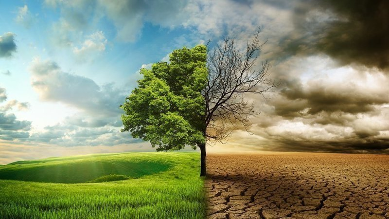
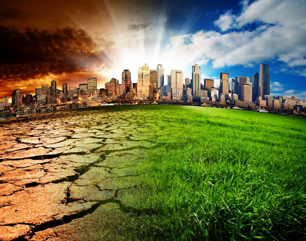
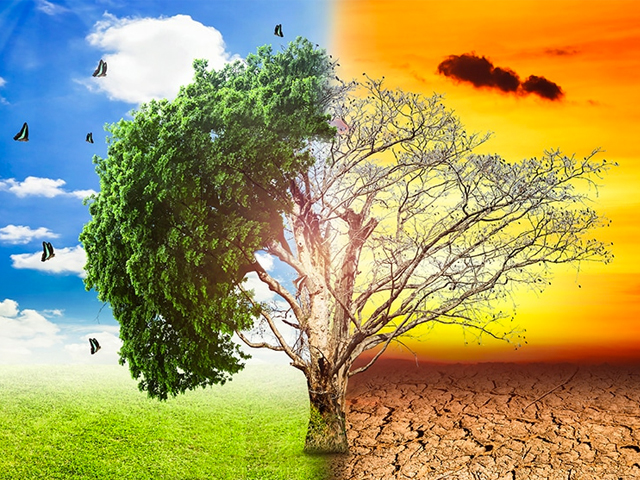

o emergencia climática es una medida adoptada por diversas entidades, ciudades y universidades como respuesta a la crisis climática. Se trata de una de las medidas que proponen varios activistas medioambientales y grupos como Amigos de la Tierra, Ecologistas en Acción, Juventud por el clima, Extinction Rebellion, Seo Birdlife, WWF España, Unión Sindical Obrera o Greenpeace. Las declaraciones han sido bien recibidas por Greta Thunberg.
El
estado de emergencia climática
involucra la adopción de medidas para lograr reducir las emisiones de carbono a cero en un plazo determinado y ejercer presión política a los gobiernos para que tomen conciencia sobre la situación de crisis ambiental existente.
